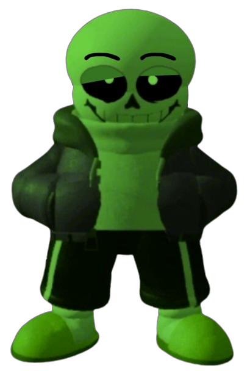
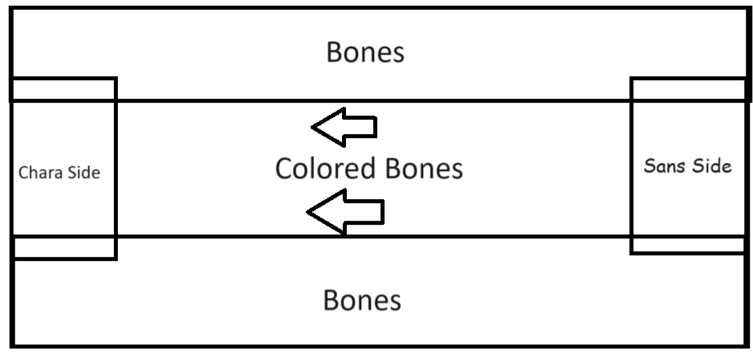

Introduction Page
Phase 1
Phase 2
Undertale : Last Corridor

Green
Sans [Lite]
Phase 1
Information
* You Check, Green Sans
* ATK 1 DEF 1
* Stamina : 115
* Classic Sans But For Some Reason, He Is Green?... While Also Looking More Relaxed Than Usual
* Why Do I feel Like This Battle Will Not Be Serious.
Starting Cutscene
Green Sans Will Try To Start His Music On His Phone Failing 3 Times Before His Actual Theme Start
"Perfect"
"Okay So Im Really Mad At You"
"First You Destroyed My Happy Meal"
"And Now You Called Your Friends?"
"I Didn't Think You Could Become More Pathetic"
-Battle Starts-
(Or If You Decided To Skip)
Green Sans Pulls Out His Phone Before The Rude Skip Happens
"Oh Wow You Decided To Skip My Awesome Intro?"
"Then Lets Skip To Me Becoming Like Your Father, Beating You Shi#less"
(The Theme)
(The Title : Totally Serious Battle By Alminum The squeal)
(Or You Can Check It Out Here : https://youtu.be/JzY8IgPM-GI?si=keG0fjs4PuYvkd2i )
Passive
The Happiest Meal
every 45s A Happy Meal Spawn In A Random Place Around The Corridor
(Chara's Could Destroy The Happy Meal By Steping Over It)
(Sans Will Heal 30 Stamina If He Got The Happy Meal)
(Will Despawn After 20s)
* What Happens When The Happy Meal Gets Destroyed?
It Will explode And Make Sans... Well...
With The Following Sound effect
Freezes everyone In Place For 3s
(Music Stops Playing)
(Chara And Sans Wouldn't Be Able To Attack)
(Freezes Green Sans Cooldown And Stamina Regen)
(Just A Meme Thing With No Benefit)
Available Attacks
- G-Money Blasters
(10 stamina cost)
(CD : 12s)
- Bone Rush
(8 stamina cost)
(CD : 6s)
- Bone Pin
(20 stamina cost)
(CD : 30s)
Summon A Giant Blaster That Charges At The Nearest Chara And After Charging Will Shoot To A Random Chara
(Charge Damage : 8HP, (Charge Has No KR damage))
(Blaster Blast Does The Usual Damage of 1 with KR)
Summon Bones going foward but when it hits A wall Or Chara, Will Bounce Randomly around Gaining Speed Overtime
(6 Bounces Before Despawning)
(Bones Does The Usual Damage of 1 with KR)
A "!" Would Appear On The Side Of The Corridor And Summons Massive Bones On The Side Of The Corridor, Pinning The Chara To The Center.
Then Colored Bones Would Proceed To Advance Foward From The Sans Side Corridor
(Colored Bones Has 50-50 Chance Of spawning blue or orange bones(6 Colored Bones))
(The Bones Does The Usual Damage of 1 with KR)

(How It Would Look Like)
- Steal
(lands : 0 stamina Cost, Miss : 15 Stamina Cost)
(CD : 15s)
- Force Crush
(12 stamina cost)
(CD : 20s)
- Blink
(10 stamina cost)
(CD : 16s)
Green Sans Will Glow Green And If A Chara Attacks Him Directly Will Get Countered
(Landing The Counter Would Make Green Sanses Say "Since You Destroyed my dinner, ill take Yours!" And Proceed To take A Healing Item out of the Chara Inventory,Healing Him 15 Stamina)
(Damage : 6Hp)
(If A Chara Does Not Have An Item, Green Sans Will Say "What? You don't Have Anything?" And Proceed To Just Lift The Chara Up And explodes Them Away)
(Damage : 10Hp)
A "!" Would Appear On Top Of Sans For 1s Before A Green Wave Goes Infront Of Green Sans Grabbing Charas That Are Hit By The Wave And Lifting Them Up.
(Can Hit Multiple Charas)
Green Would Proceed To Say "I Am Your Father!"
(Star Wars Reference)
Before Crushing The Lifted Chara's And Throws The Charas Towards Where He's Facing
(Damage : 15Hp)
Teleportation
Range : Half Of The Corridor
Introduction Page
Phase 1
Phase 2